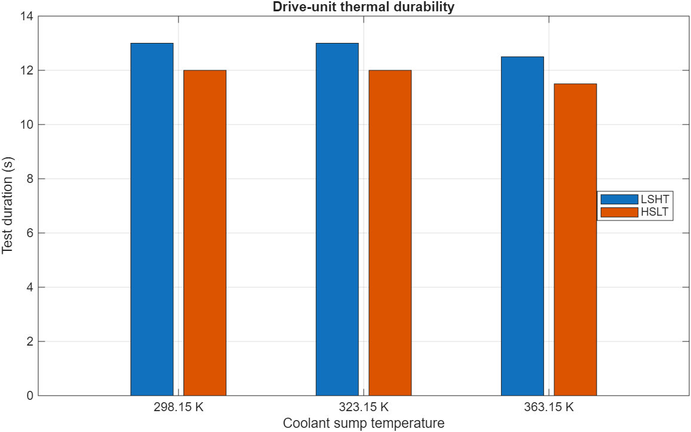

Analyze Motor Drive Thermal Durability
Drive-unit thermal management is critical for durability and life estimation — validating a design under extreme loading early reduces the risk of failure late in hardware development.
This workflow runs the drive unit at constant speed and torque across several coolant sump temperatures until it hits a failure point: winding insulation temperature, magnet demagnetization temperature, or IGBT/diode derating temperature. If none is reached, the run stops at 10,000 s, and the sustained duration per case reports the thermal margin.
Quick Setup
- Open the workflow Live ScriptOpen Live Script
Open
DUThermalDurability.mlxto measure how long the drive unit sustains each duty cycle before reaching its thermal limits. - Load the test bench and its parametersOpen test-bench parameters
Select
MotorDriveGearThand loadMotorDriveThermalTestBenchParamsto initialize the motor, inverter, and coolant states. - Choose sump temperatures and duty cyclesOpen durability runner
Select the coolant sump temperatures and duty cycles for
testBenchDuraRun. - Run and read the durability tableOpen thermal test bench
Compare LSHT and HSLT duration across coolant temperatures, using the same thermal initial state for every case.
Key Models and Components
| Model or component | Role | Reference |
|---|---|---|
| MotorDriveGearTh | Provides the winding, magnet, and inverter thermal states used for durability limits. | View component |
| Motor drive thermal test bench | Runs the drive unit across the selected duty cycles and coolant temperatures. | Open test bench |
Expected Results

The workflow produces these result types:
- LSHT and HSLT test duration at each coolant sump temperature
- Durability comparison across the configured thermal conditions
- Summary table used to identify the limiting test condition
Supporting Files
| Purpose | Artifact | Action |
|---|---|---|
| Main workflow | DUThermalDurability.mlx | Open Live Script |
| Durability runner | testBenchDuraRun.m | Open file |
| Test-bench parameters | MotorDriveThermalTestBenchParams.m | Open file |
Checks Before Using Results
- Confirm the requested duty-cycle repetitions completed.
- Verify initial coolant temperature before comparing cases.
- Use component limits from the active parameter set, not values copied into the page.